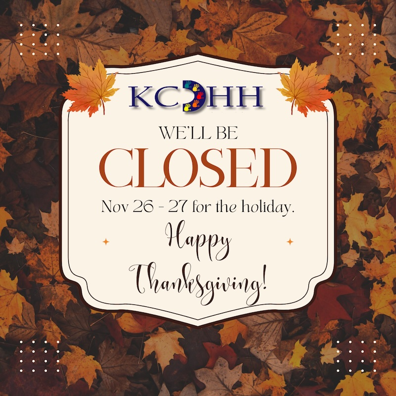
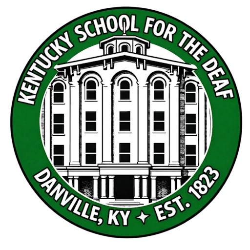
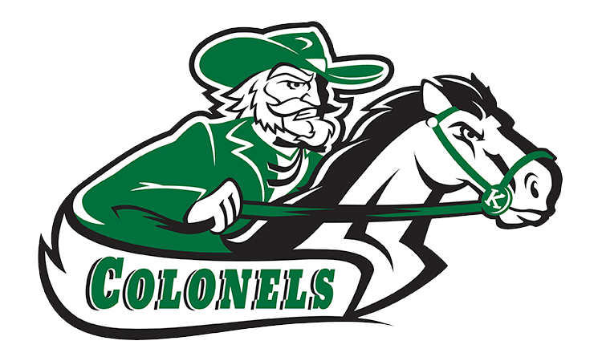

The KCDHH Staff wish you all a wonderful and safe Thanksgiving!
We want to remind you to be inclusive of your family and friends during this holiday season.

Inclusivity at the Dinner Table
The holiday season brings families and friends together for meals and celebrations. For people who are deaf or hard of hearing, these gatherings can also present communication barriers.
“Dinner table syndrome” is a term that describes being left out of conversation at family meals and other group gatherings. It can affect people with any degree of hearing loss, from mild to profound. Several people may talk at once. Background noise and dim lighting can make conversation hard to follow. A person may catch only part of what is said.
In this video from Kentucky DHH Behavioral Health Services, Anthony shares what dinner table syndrome has been like for him as a deaf person. You will also learn about the Dinner Table Project, which helps families find ways to break down communication barriers so no one is left out.
Dinner Table Project Live Event
Join the Communicare Regional Prevention Center on December 8, 2026 for a Deaf & Hard of Hearing
Dinner Table Project Live Event! ASL Interpreters will be available, and the evening will include a yummy
meal, and fun activities for all families.
Ask your family member or friend who is deaf or hard of hearing what helps most.
Offer a seat with a clear view of everyone at the table.
Keep the room well lit so faces are easy to see.
Turn off the television or music during the meal.
Take turns speaking so only one person talks at a time.
Get the person’s attention before you begin speaking.
Let the person know when the topic of conversation changes.
Repeat or rephrase information when asked. Avoid responding with “never mind” or “I’ll tell you later.”
For People Who Are Deaf or Hard of Hearing
Tell your host or family ahead of time what helps you follow conversation.
Choose a seat with a clear view of faces.
Sit away from sources of background noise when possible.
Check that hearing aids, cochlear implants, or other hearing devices are charged before the gathering.
Use a speech-to-text app on a phone or tablet to caption conversation at the table.
Ask a family member or friend to fill you in when you miss part of a conversation.
Spend time in smaller conversations, which can be easier to follow.
Take breaks when you need them. Following group conversation can be tiring.
Small changes can help everyone at the table share in the holiday conversation.
Native American Heritage Month
November is Native American Heritage Month. This observance honors the history, cultures, and contributions of Native American and Indigenous peoples.
This month is also a time to recognize deaf and hard of hearing Native Americans as part of that history.
Deaf Services Unlimited shares the stories of deaf Native American leaders and community members in an article for this observance. The article also explains the history of Plains Indian Sign Language (PISL).
According to the article, members of multiple tribal nations used PISL to communicate with one another when they did not share a spoken language.
November is Diabetes Awareness Month. It is a good time to learn how diabetes can affect hearing health.
According to the Centers for Disease Control and Prevention (CDC), diabetes can damage nerves in many parts of the body, including the ears. Over time, high blood sugar can damage small blood vessels and nerves in the inner ear. Low blood sugar over time can affect how nerve signals travel from the inner ear to the brain. The CDC reports that both types of damage can lead to hearing loss.
The CDC also reports that hearing loss is twice as common in people who have diabetes as in people of the same age who do not. People with prediabetes have a 30 percent higher rate of hearing loss than people with normal blood sugar levels.
Hearing loss can develop slowly. Some people may not notice the change right away. The CDC lists several signs of hearing loss, including often asking others to repeat themselves, having trouble following conversations with more than one person, and having trouble hearing in noisy places. Problems with the inner ear can also affect balance.
The CDC recommends several steps to help protect hearing. Keep blood sugar as close to target levels as possible. Have hearing tested by an audiologist after a diabetes diagnosis and every year after that. Avoid other causes of hearing loss, such as loud noise. Ask a doctor whether any current medications can affect hearing.
Hearing health is an important part of diabetes care for everyone, including people who are already deaf or hard of hearing.
Get Involved
Board Vacancy
KCDHH TAP Advisory Board Vacancies
Deadline to apply: December 2, 2026
The Kentucky Commission on the Deaf and Hard of Hearing (KCDHH) is accepting applications for three
vacancies on the Telecommunications Access Program (TAP) Advisory Board:
Two deaf consumer representatives
One speech-impaired consumer representative
The TAP Advisory Board helps guide decisions about specialized telephone and telecommunications equipment
for people in Kentucky who are deaf, hard of hearing, or have speech disabilities. Your experiences and
perspectives can help ensure that TAP equipment and services reflect the needs of the people who use them.
Deaf consumer representatives must be deaf or hard of hearing.
Speech-impaired consumer representatives must have a speech disability that affects their
ability to communicate over the telephone.
Members are appointed to four-year terms. The board meets twice a year in Frankfort, typically in April and
October.
A brief statement explaining why you want to serve on the TAP Advisory Board
A current résumé (optional)
Jessica Endler Smith, TAP Program Coordinator
Kentucky Commission on the Deaf and Hard of Hearing (KCDHH)
632 Versailles Road, Frankfort, KY 40601 jessica.endler@ky.gov
Advisory Board

The Kentucky School for the Deaf Advisory Board Will Meet Nov. 19
The Kentucky School for the Deaf (KSD) Advisory Board will meet in person at 6 p.m. ET / 5 p.m. CT on
Nov. 19 in the Kerr Building Open Area at KSD in Danville.
Watch live on the KSD YouTube Channel.
Per KRS 167.037, this board is to be composed of nine members appointed by the Kentucky Board of
Education (KBE) upon the recommendation of the commissioner of education.
The purpose of the board is to act in an advisory capacity to assist school leadership and make
recommendations related to: (1) school goals and objectives; (2) budget requests; (3) student services;
(4) public relations; (5) construction and maintenance; and (6) program evaluation.
Membership on the board is statewide and consists of two parents of Deaf children, one professional in
education of the Deaf, one former student of the Kentucky School for the Deaf, one member of the Kentucky
Association for the Deaf (KAD), two members who represent school districts, and two members at large. A
majority of the board’s membership is persons who are Deaf or Hard of Hearing.
Advisory Board Members

Scott Haun, Professional
Bethany Yance, Former Student
Vacant, Member at Large
Hailey Brock, Kentucky Association of the Deaf
Kela Parton, Member at Large
Robin Bush, District
Vacant, District
Erin Rhoden, Parent of deaf children
Cathy White, Parent of deaf children
Agenda
Welcome — Bethany Nymo-Yance, Chair of the KSD Advisory Board
Approval of August 20, 2026, Board Minutes — Bethany Nymo-Yance, Chair of the KSD Advisory Board
KSD Report — Justin Padgett, Principal, Kentucky School for the Deaf
KSD FFA Updates — FFA Students, Kentucky School for the Deaf
KSD Athletics — Kristy Belvins, Athletic Director, Kentucky School for the Deaf
KSD Facilities Update — Chris Grey, Director of KSD Operations, Kentucky School for the Deaf
Student Life Report — Kevin Hamilton, Student Life Specialist, Kentucky School for the Deaf
KDE Update — Shannon Sparkman, Director of State Schools, Office of Special Education and Early
Learning
New Business: Discussions, Goals, Objectives and Recommendations of Advisory Board — Bethany
Nymo-Yance, Chair of the KSD Advisory Board
Public Comments — Bethany Nymo-Yance, Chair of the KSD Advisory Board
Adjournment — Bethany Nymo-Yance, Chair of the KSD Advisory Board
‘I am their eyes, ears and voice’: A Father’s Journey with His DeafBlind Sons
Fawaz Al Hasban shares what it’s like raising his two sons, Ahmad and Osama, who both have Usher
syndrome. He describes how the brothers use tactile sign language and assistive technology to communicate
and learn, and encourages other parents to see disability as part of human diversity.
The Federal Trade Commission (FTC) has warned that scammers are using new technology to make phone calls
more convincing. For example, a scammer can use artificial intelligence to copy the voice of a loved one
from a short audio clip posted online.
According to the FTC, consumers reported losing $15.9 billion to fraud in 2025. Reported losses have increased each year for six years in a row. FTC data also shows that scams starting with a phone call had the highest median loss per person, at $1,835.
Scam calls can reach any phone, including captioned telephones and phones used with relay services.
Protect yourself
Hang up if a caller pressures you to send money or share personal information.
Call back using a number you know is real, such as the number on your bank statement or the back of your
card.
Talk with someone you trust before you send money.
Senior Planet from AARP offers free online classes on how to spot and avoid scams. Visit
seniorplanet.org/classes to
find an upcoming class.
Learning Opportunity
Economics and Finances in ASL
Making Economics and Financial News Accessible in ASL!
Understanding the economy, national debt, and financial news can be complicated. Now, there’s a
YouTube channel working to make these topics more accessible to the Deaf community!
Beyond the Headline, created by Michael Moore, features videos produced entirely in
American Sign Language (ASL) with English captions. The videos break down complex topics, including the
national debt, the Federal Reserve, financial markets, and major events that affect our everyday lives.
Michael created the channel to help fill the gap in in-depth information about economics and current
events presented directly in ASL.
ASTra webinar - From Parent Records to Student Voice: The Power of Documentation - Webinar 11:00AM - 12:00PM MOUNTAIN TIME · 1:00PM - 3:00PM ET More Info & Registration
NOV19
Cincinnati Art Museum: Looking Twice (ASL Interpreted) Cincinnati, OH · 6:00PM More Info & Registration
NOV21
Cincinnati Art Museum: Free Public Tour (ASL Interpreted) Cincinnati, OH · 1:00PM More Info & Registration
NOV21
Kentucky Hands & Voices - Trivia Night & Silent Auction Louisville, KY · 5:30 PM - 8:30 PM More Info & Registration
DEC5
Hearing Speech + Deaf Center: Signing Santa Jolly + Bright Cincinnati, OH · Sign up by Nov 20More Information & Registration
52nd Annual Gallaudet & Clerc Banquet Danville, KY · 6 PM - 9 PM · RSVP by Nov 20
DEC12
A Deaf-Led Gathering for Deaf, DeafBlind & Hard of Hearing Adults with Developmental or Intellectual Disabilities Florence, KY · 10 AM - 12 PM · Register by Dec 4 · Pro-tactile requests by Nov 30Registration
DEC19
PAH Club: 3rd Annual Dinner with Signing Santa Louisville, KY · 4 PM - 8 PM More Information
Kentucky Hands & Voices - Family Weekend Retreat Scottsville, KY · April 16-18, 2027 Pre-Register
Resources & Opportunities
ADVOCACY
Kentucky P&A wants to hear from YOU!
Kentucky P&A is the designated protection and advocacy system for Kentucky and works to protect and promote
the rights of people with disabilities and individuals who are deaf or hard of hearing through advocacy,
education, training, information and referral, and legal servces.
Learn more about Kentucky P&A at
https://www.kypa.net or call
800-372-2988.
Your voice matters!
Kentucky Protection & Advocacy is currently planning new areas of focus for 2027, and community input is
an important part of that process. Please take a few minutes to complete the survey and share your
thoughts.
These organizations offer guidance on accommodations, self-advocacy, IEPs, and educational planning for
deaf and hard of hearing students from preschool through college.
Programs, camps, and activities for deaf and hard of hearing youth across Kentucky.
Gallaudet: Youth Esports Series
Gallaudet University's Youth Esports Series brings deaf and hard of hearing students together online to
compete in team gaming tournaments, build friendships, and connect with peers from across the country.
Gallaudet University's National Literary Competition invites deaf and hard of hearing students to
showcase their talents in creative writing and ASL storytelling and poetry.
For grades 6th - 12th.
Sign-up Dates: September 27, 2026 - January 8, 2027
KCDHH accepts submissions relevant to the Deaf and Hard of Hearing community, their families, service
providers, and community partners. This includes events, announcements, and resources.
Submissions should include:
• Title of event or announcement
• Date and time
• Location (in-person or virtual)
• Contact information for person who can answer questions related to the information
• Brief description (100 words or fewer)
• Must state whether or not accommodations will be provided and if not, the name and contact information for the person that needs to be contacted to request it.
Information must be submitted in PDF format attached to an email.
All submitted documents must meet federal accessibility standards. KCDHH does not edit documents for
accessibility. If your document is not accessible, please provide a direct link to a webpage or social media page where the information can be found and we will share the link.
KCDHH reserves the right to edit, accept, or decline any submission.